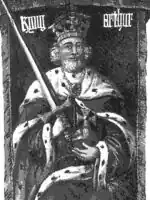

Кретьєн де Труа (народився близько 1135 року помер близько 1185 роки) — французький письменник, видатний середньовічний майстер жанру "куртуазний роман". Біографія Кретьєна де Труа містить незначну кількість інформації, оскільки про життя письменника відомо мало.
Стиль і сюжети його романів говорять про добру освіту автора, яка була властива клірикам тієї епохи. Присвяти і натяки говорять про зв'язки де Труа з суспільством Марії Шампанської, графинею, за вказівкою якої письменник створив роман про Ланселота, а також з суспільством Філіпа Фландрского, графа, на замовлення якого де Труа створив роман про Персеваль. Після смерті письменника цей роман залишився незавершеним.
Після себе де Труа залишив не тільки кілька романів, але і зразки лірики, "Вільгельм Англійська", агіографічну поему, пам'ятник житійного творчості і поему "Филомена". У його творчості простежується захоплення Овідієм. Сліди його помітні не тільки в дійшла до нас "Філомене", а й в назвах інших, що не збереглися сюжетів, не тільки в точній вказівці на симпатію до творчості давньоримського поета (як відомо, з цього починається "Кліжес"), але і в ремінісценціях з Овідія, виявлених дослідниками в ряді романів. Деяка кількість куртуазних романів де Труа дійшло і до нашого часу: "Ерек", що розповідає про тріумф любові над доблестю лицаря; "Кліжес", історія Ізольди і Трістана, оброблена, як того вимагає куртуазний жанр; "Лицар у візку", що оповідає про любов Ланселота до Джиневра, королеві; "Ивейн, або лицар з левом", що оповідає про конфлікт лицарської звитяги та любові; "Сказання про Грааль, або Персеваль", яке об'єднало в собі історію Персеваля, простеца, з мотивами апокрифів. Зараз встановлюється така датування творінь Кретьєна: "Ерек і Енід" приблизно датується 1170 роком, "Кліжес", теж, звичайно, приблизно — 1176 роком, "Ланселот" і "Ивейн" — 1176-1181 роки, "Персеваль" — 1181-1191 роки. Міністеріал незнатного роду, основоположник куртуазного жанру в северофранцузской літературі, де Труа у виборі історій і у відображенні любовних відносин розташовується ще на стику двох періодів. Слідом за Васом Кретьене де Труа вносить в куртуазну літературу, так звані, бретонські мотиви: романи "Персіваль", "Ланселот", "Ивейн", "Ерек" розігруються при товаристві короля Артура. Тим часом, в "Ерек" простежуються візантійське і античне впливу, але "гріховний і ганебний" сюжет про кохання Трістана та Ізольди, який прославляє всю міць любові, у Кретьєна де Труа викликає протест. Суперечливість поглядів де Труа спостерігається і щодо його до жінок. У ранніх творах письменник піддає суворим випробуванням своїх героїнь, наприклад, дружину Ерек Енід в романі "Ерек" за відсутність властивого дружині смирення. В інших піснях Кретьєн розвиває одне з головних положень сучасного розуміння любові як куртуазного служіння дамі, яка одружена, вважаючи його досконалої і прийнятною формою пристрасті. Де Труа перебуває ніби на стику двох світоглядів — старого феодально-церковного і світсько-куртуазного. У його творчості явно простежуються риси, які дозволяють поєднати куртуазность з раціоналізмом ренесансу і уважним ставленням до почуттів людини. У своїй творчості він намагається відповідати досконалості розумної і ясної гармонії, яка є властивою куртуазної поезії. У де Труа були свої послідовники. Оному з них письменник навіть доручив закінчити набридле автору оповідання про амурні божевілля персонажа Ланселота Озерного. По суті, це був вже перший крок до утворення "школи", обриси якої, треба сказати, ще ледве намічалися.